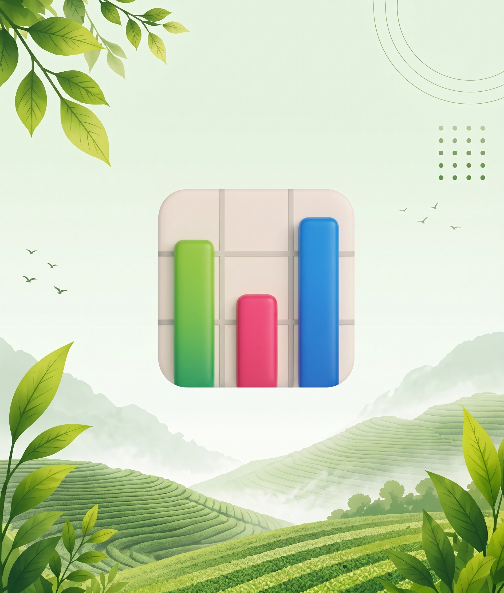

Track crop health, livestock conditions,
and receive instant alerts using AI-
powered tools built for Filipino farmers.
Get localized typhoon alerts, flood
warnings, and 7-day forecasts powered
by PAGASA data - before disaster
strikes.

Turn farm data into clear insights
and improve your daily decisions
with confidence.